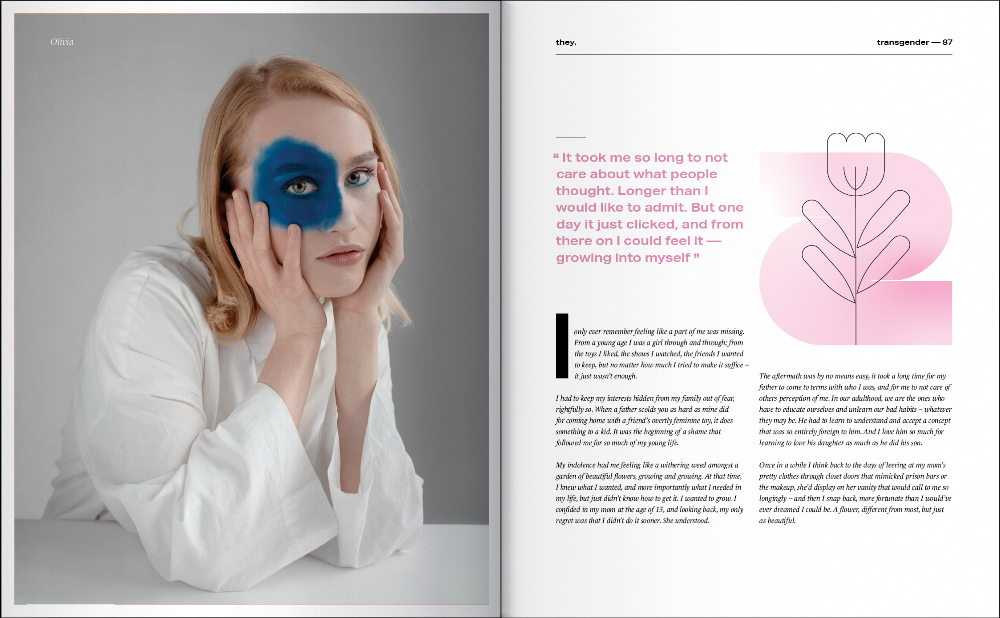
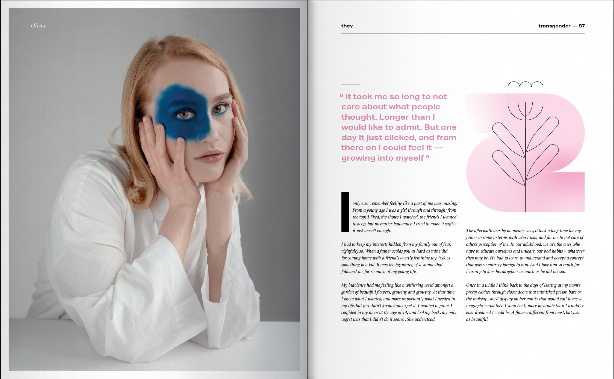

They. is a print and web project that was built around the topic of gender identity and gender expression. Historically, the terms “sex” and “gender” have been used interchangeably, but their uses are becoming increasingly distinct, and it is becoming more and more important in our society to understand and accept the differences between the two. That is why I created a space both physically and digitally that could be curated for young adults — in a way they could relate to the design style while still being educated on the topics. Vibrant colours contrasted with black and white illustrations allow for a playful nature while not veering too far off from the importance of the written content. Typography choices along with negative white space introduces an editorial feel to appeal to the more mature audience that may be taking in the information for themselves or for their children. They. stands for everything I believe in when it comes to inclusivity.


 
